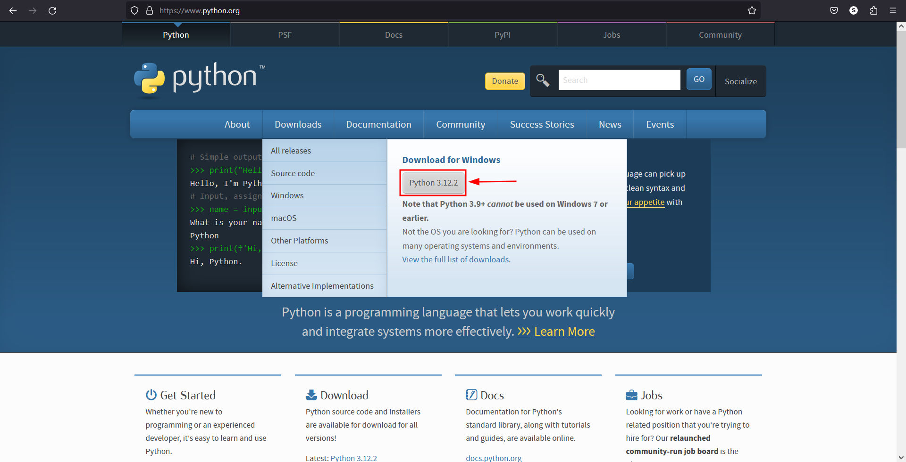
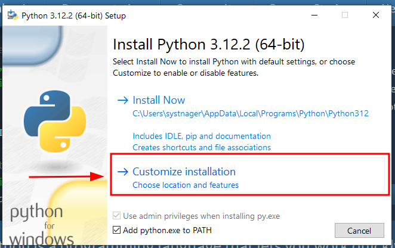
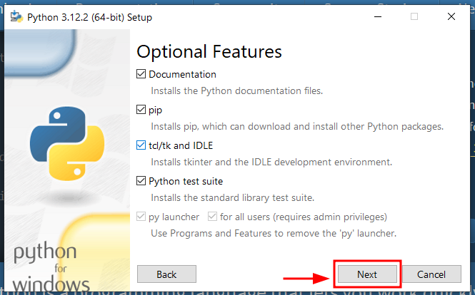
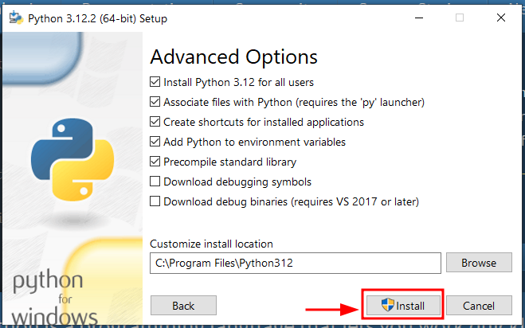

Ну що ж. Якщо тобі цікаво почати вивчення програмування то можемо розпочати! Зазвичай, при початку вивчення програмування існує негласна традиція написання програми "hello, world". Почнімо! Спочатку потрібно завантажити інтерпретатор python 3 на свій ПК. Для цього перейди на https://python.org у своєму браузері. Далі натисни на кнопку, як на фото:
Піде завантаження інсталятора. Його потрібно запустити для інсталяції інтерпретатора в систему. Далі надаю опис того, що потрібно зробити для успішної інсталяції. Тут ми обираємо власні параметри інсталяції. Нам потрібно додати інтерпретатор python у path Windows аби ми могли з консолі чи будь-якої IDE звернутись до нього.
Далі ми обираємо всі пункти. Наразі нам мало що з цього потрібно (лише IDLE, тут будемо писати програмний код), але потрібно встановити все, аби в подальшому не виникало проблем із роботою з python
Далі можна встановити інтерпретатор для всіх користувачів або лише для поточного. На фото нижче показано приклад встановлення для всіх користувачів. Також можна обрати власну теку для інсталяції
Ну от і все: залишилось лише дочекатися завершення інсталяції і можна починати розробку!